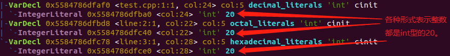
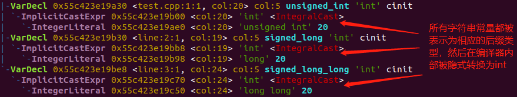
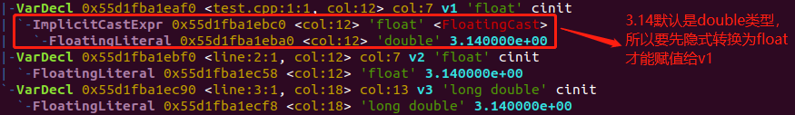
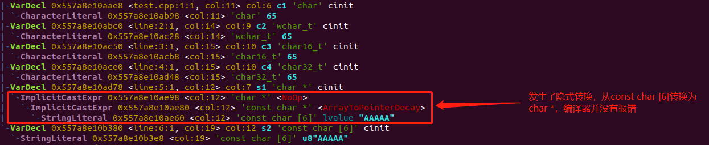

C++ 中的字面值常量
前言
一个形如 20 的值称之为字面值常量（literal），这样的值一望而知。每个字面值常量对应一种数据类型，由其形式和值决定。
整型字面值
整型字面值可以写成十进制数、八进制数、或者十六进制数的形式。例如，我们可以用以下任意一种形式来表示数值 20：
1 | int decimal_literals = 20; //十进制 |
默认情况下，十进制字面值的类型是 int 、long 和 long long 中能容纳其数值的最小者。而八进制和十六进制字面值的类型是能容纳其数值的 int、unsigned int、long、unsigned long、long long 和 unsigned long long 中的尺寸最小者。若一个字面值连与之关联的最大的数据类型都放不下，将产生错误。
可以通过在常量后添加后缀来声明字面值常量的类型，添加后缀 u 或 U 表示为 unsigned ，添加后缀 l 或者 L 表示为 long 类型，添加后缀 ll 或者 LL 表示为 long long 类型，可以通过组合 ul 将常量声明为 unsigned long 型。例如：
1 | int unsigned_int = 20u; //无符号整型 |
将上述两段代码用 clang 生成语法树如下：


浮点数字面值
默认情况下，浮点数字面值是一个 double 类型，表现为一个小数和科学计数法表示的指数，其中指数部分用 E 或 e 标识。可以通过在常量后添加后缀来声明浮点数字面值常量的类型，添加后缀 f 或 F 表示为 float ，添加后缀 l 或者 L 表示为 long double 类型。代码示例：
1 | float v1 = 3.14; //3.14是double类型 |
clang 生成语法树如下：

字符和字符串字面值
由单引号括起来的一个字符称为 char 型字面值，双引号括起来的零个或多个字符则称为字符串型字面值。字符串字面值的类型实际上是由常量字符构成的数组，其类型为 const char []，在 ELF 文件中存放于 .rodata 段。 字符字面值或者字符串字面值通过添加前缀 L 表示为宽字符 wcahr_t ，通过添加前缀 u 和 U 可以分别表示为 Unicode16 字符 char16_t 和 Unicode32 字符 char32_t。特殊的，字符串字面值添加前缀 u8 可以表示为 UTF-8 字符串字面值。代码示例：
1 | char c1 = 'A'; //char型常量 |
clang 生成语法树如下：

转义序列
有两类字符程序员不可以直接使用：一类是不可打印字符，如退格回车等控制字符；另一类是 C++ 中有特殊含义的字符（单引号 '、双引号 "、问号 ?、反斜杠 \）。在这些情况下需要用到转义序列，转移序列均以反斜杠作为开始。C++ 中规定的转义序列包括有：
- 换行符
\n - 纵向制表符
\v - 反斜杠
\\ - 回车符
\r - 横向制表符
\t - 退格符
\b - 问号
\? - 进纸符
\f - 报警符
\a - 双引号
\" - 单引号
\'
布尔字面值和指针字面值
true 和 false 是布尔类型的字面值
nullptr 是指针字面值
参考资料： 《C++ Prime》、clang 官方文档